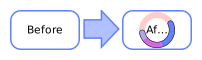
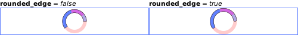

Class wibox.container.arcchart
A circular chart (arc chart).
It can contain a central widget (or not) and display multiple values.

Info:
- Copyright: 2013 Emmanuel Lepage Vallee
- Author: Emmanuel Lepage Vallee <[email protected]>
Functions
| wibox.container.arcchart ([widget]) | Returns a new arcchart layout. |
Object properties
| widget | The widget to wrap in a radial proggressbar. |
| paddings | The padding between the outline and the progressbar. |
| border_color | The border background color. |
| colors | The arcchart values foreground colors. |
| border_width | The border width. |
| min_value | The minimum value. |
| max_value | The maximum value. |
| bg | The radial background. |
| value | The value. |
| values | The values. |
| rounded_edge | If the chart has rounded edges. |
| thickness | The arc thickness. |
| start_angle | The (radiant) angle where the first value start. |
| forced_height | Force a widget height. |
| forced_width | Force a widget width. |
| opacity | The widget opacity (transparency). |
| visible | The widget visibility. |
Signals
| widget::layout_changed | When the layout (size) change. |
| widget::redraw_needed | When the widget content changed. |
| button::press | When a mouse button is pressed over the widget. |
| button::release | When a mouse button is released over the widget. |
| mouse::enter | When the mouse enter a widget. |
| mouse::leave | When the mouse leave a widget. |
Theme variables
| beautiful.arcchart_border_color | The progressbar border background color. |
| beautiful.arcchart_color | The progressbar foreground color. |
| beautiful.arcchart_border_width | The progressbar border width. |
| beautiful.arcchart_paddings | The padding between the outline and the progressbar. |
| beautiful.arcchart_thickness | The arc thickness. |
Methods
| wibox.container.arcchart:get_children () | Get the children elements. |
| wibox.container.arcchart:set_children (children) | Replace the layout children This layout only accept one children, all others will be ignored |
| wibox.container.arcchart:reset () | Reset this layout. |
| wibox.container.arcchart:get_all_children () | Get all direct and indirect children widgets. |
| wibox.container.arcchart:setup (args) | Set a declarative widget hierarchy description. |
| wibox.container.arcchart:buttons (_buttons) | Set/get a widget’s buttons. |
| wibox.container.arcchart:emit_signal_recursive (signal_name, ...) | Emit a signal and ensure all parent widgets in the hierarchies also forward the signal. |
| wibox.container.arcchart:emit_signal (name, ...) | Emit a signal. |
| wibox.container.arcchart:connect_signal (name, func) | Connect to a signal. |
| wibox.container.arcchart:weak_connect_signal (name, func) | Connect to a signal weakly. |
Functions
Methods- wibox.container.arcchart ([widget])
-
Returns a new arcchart layout.
- widget The widget to display. (optional)
Object properties
- widget
-
The widget to wrap in a radial proggressbar.
Type:
- widget widget The widget
- paddings
-
The padding between the outline and the progressbar.
Type:
- paddings A number or a table
- top number (default 0)
- bottom number (default 0)
- left number (default 0)
- right number (default 0)
- paddings A number or a table
- border_color
- The border background color.
- colors
-
The arcchart values foreground colors.
Type:
- values table An ordered set of colors for each value in arcchart.
- border_width
-
The border width.
Type:
- border_width number (default 3)
- min_value
- The minimum value.
- max_value
- The maximum value.
- bg
-
The radial background.
Type:
- color
See also:
- value
-
The value.
Type:
- value number Between min_value and max_value
See also:
- values
-
The values.
The arcchart is designed to display multiple values at once. Each will be
shown in table order.
Type:
- values table An ordered set of values.
See also:
- rounded_edge
-
If the chart has rounded edges.

Type:
- boolean (default false)
- thickness
-
The arc thickness.
Type:
- number
- start_angle
-
The (radiant) angle where the first value start.
Type:
- number A number between 0 and 2*math.pi (default math.pi)
- forced_height
-
Force a widget height.
Type:
- height
number or nil
The height (
nilfor automatic)
- height
number or nil
The height (
- forced_width
-
Force a widget width.
Type:
- width
number or nil
The width (
nilfor automatic)
- width
number or nil
The width (
- opacity
-
The widget opacity (transparency).
Type:
- opacity number The opacity (between 0 and 1) (default 1)
- visible
-
The widget visibility.
Type:
- boolean
Signals
- widget::layout_changed
-
When the layout (size) change.
This signal is emitted when the previous results of
:layout()and:fit()are no longer valid. Unless this signal is emitted,:layout()and:fit()must return the same result when called with the same arguments.See also:
- widget::redraw_needed
-
When the widget content changed.
This signal is emitted when the content of the widget changes. The widget will
be redrawn, it is not re-layouted. Put differently, it is assumed that
:layout()and:fit()would still return the same results as before.See also:
- button::press
-
When a mouse button is pressed over the widget.
Arguments:
- lx number The horizontal position relative to the (0,0) position in the widget.
- ly number The vertical position relative to the (0,0) position in the widget.
- button number The button number.
- mods table The modifiers (mod4, mod1 (alt), Control, Shift)
- find_widgets_result The entry from the result of
wibox.drawable:find_widgets for the position that the mouse hit.
- drawable wibox.drawable The drawable containing the widget.
- widget widget The widget being displayed.
- hierarchy wibox.hierarchy The hierarchy managing the widget’s geometry.
- x number An approximation of the X position that the widget is visible at on the surface.
- y number An approximation of the Y position that the widget is visible at on the surface.
- width number An approximation of the width that the widget is visible at on the surface.
- height number An approximation of the height that the widget is visible at on the surface.
- widget_width number The exact width of the widget in its local coordinate system.
- widget_height number The exact height of the widget in its local coordinate system.
See also:
- button::release
-
When a mouse button is released over the widget.
Arguments:
- lx number The horizontal position relative to the (0,0) position in the widget.
- ly number The vertical position relative to the (0,0) position in the widget.
- button number The button number.
- mods table The modifiers (mod4, mod1 (alt), Control, Shift)
- find_widgets_result The entry from the result of
wibox.drawable:find_widgets for the position that the mouse hit.
- drawable wibox.drawable The drawable containing the widget.
- widget widget The widget being displayed.
- hierarchy wibox.hierarchy The hierarchy managing the widget’s geometry.
- x number An approximation of the X position that the widget is visible at on the surface.
- y number An approximation of the Y position that the widget is visible at on the surface.
- width number An approximation of the width that the widget is visible at on the surface.
- height number An approximation of the height that the widget is visible at on the surface.
- widget_width number The exact width of the widget in its local coordinate system.
- widget_height number The exact height of the widget in its local coordinate system.
See also:
- mouse::enter
-
When the mouse enter a widget.
Arguments:
- find_widgets_result The entry from the result of
wibox.drawable:find_widgets for the position that the mouse hit.
- drawable wibox.drawable The drawable containing the widget.
- widget widget The widget being displayed.
- hierarchy wibox.hierarchy The hierarchy managing the widget’s geometry.
- x number An approximation of the X position that the widget is visible at on the surface.
- y number An approximation of the Y position that the widget is visible at on the surface.
- width number An approximation of the width that the widget is visible at on the surface.
- height number An approximation of the height that the widget is visible at on the surface.
- widget_width number The exact width of the widget in its local coordinate system.
- widget_height number The exact height of the widget in its local coordinate system.
See also:
- find_widgets_result The entry from the result of
wibox.drawable:find_widgets for the position that the mouse hit.
- mouse::leave
-
When the mouse leave a widget.
Arguments:
- find_widgets_result The entry from the result of
wibox.drawable:find_widgets for the position that the mouse hit.
- drawable wibox.drawable The drawable containing the widget.
- widget widget The widget being displayed.
- hierarchy wibox.hierarchy The hierarchy managing the widget’s geometry.
- x number An approximation of the X position that the widget is visible at on the surface.
- y number An approximation of the Y position that the widget is visible at on the surface.
- width number An approximation of the width that the widget is visible at on the surface.
- height number An approximation of the height that the widget is visible at on the surface.
- widget_width number The exact width of the widget in its local coordinate system.
- widget_height number The exact height of the widget in its local coordinate system.
See also:
- find_widgets_result The entry from the result of
wibox.drawable:find_widgets for the position that the mouse hit.
Theme variables
- beautiful.arcchart_border_color
- The progressbar border background color.
- beautiful.arcchart_color
- The progressbar foreground color.
- beautiful.arcchart_border_width
- The progressbar border width.
- beautiful.arcchart_paddings
-
The padding between the outline and the progressbar.
Type:
- paddings A number or a table
- top number (default 0)
- bottom number (default 0)
- left number (default 0)
- right number (default 0)
- paddings A number or a table
- beautiful.arcchart_thickness
-
The arc thickness.
Type:
- number
Methods
- wibox.container.arcchart:get_children ()
-
Get the children elements.
Returns:
-
table
The children
- wibox.container.arcchart:set_children (children)
-
Replace the layout children
This layout only accept one children, all others will be ignored
- children table A table composed of valid widgets
- wibox.container.arcchart:reset ()
- Reset this layout. The widget will be removed and the rotation reset.
- wibox.container.arcchart:get_all_children ()
-
Get all direct and indirect children widgets.
This will scan all containers recursively to find widgets
Warning: This method it prone to stack overflow id the widget, or any of its
children, contain (directly or indirectly) itself.
Returns:
-
table
The children
- wibox.container.arcchart:setup (args)
-
Set a declarative widget hierarchy description.
See The declarative layout system
- args An array containing the widgets disposition
- wibox.container.arcchart:buttons (_buttons)
-
Set/get a widget’s buttons.
- _buttons The table of buttons that should bind to the widget.
- wibox.container.arcchart:emit_signal_recursive (signal_name, ...)
-
Emit a signal and ensure all parent widgets in the hierarchies also
forward the signal. This is useful to track signals when there is a dynamic
set of containers and layouts wrapping the widget.
- signal_name string
- ... Other arguments
- wibox.container.arcchart:emit_signal (name, ...)
-
Emit a signal.
- name string The name of the signal.
- ... Extra arguments for the callback functions. Each connected function receives the object as first argument and then any extra arguments that are given to emit_signal().
- wibox.container.arcchart:connect_signal (name, func)
-
Connect to a signal.
- name string The name of the signal.
- func function The callback to call when the signal is emitted.
- wibox.container.arcchart:weak_connect_signal (name, func)
-
Connect to a signal weakly.
This allows the callback function to be garbage collected and automatically disconnects the signal when that happens.
Warning: Only use this function if you really, really, really know what you are doing.
- name string The name of the signal.
- func function The callback to call when the signal is emitted.